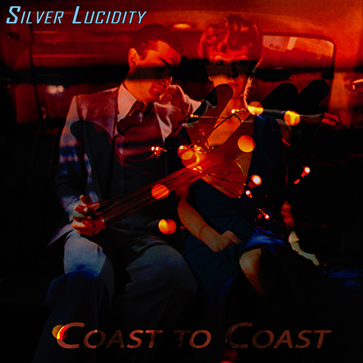
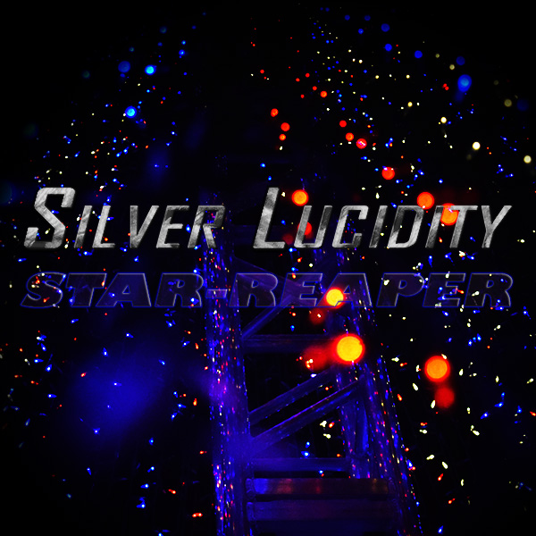
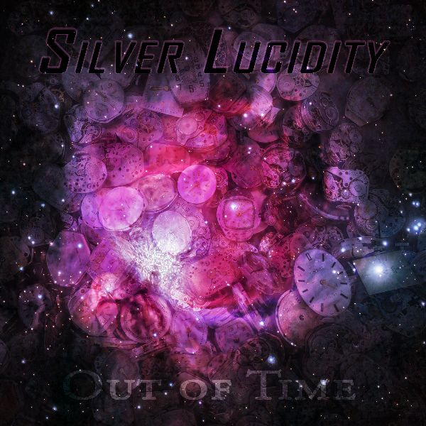
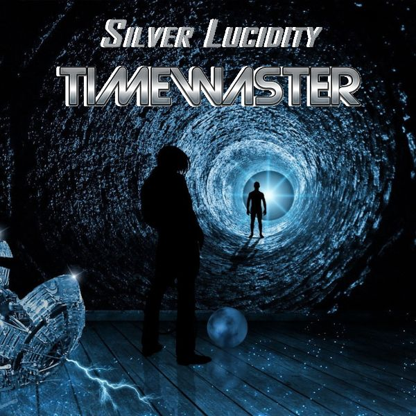

- Tribute Compilation (special)
- Some tribute songs.
- Mixed Styles 
- STAR-REAPER (2021)
- The story of Sol the astronaut.
- Mixed Music Styles 
- Far From The Tree
- The tale of a fallen angel.
-
Metal/Rock Styles

- 42
- 42 Random Access Memories
-
Mixed Music Styles

- Another Heartbreak Album
- A story of a broken heart.
-
Singer-Songwriter Styles

- Out of Time
- The mystery of life and universes explained.
- Art Rock Styles 
- Timewaster
- A story about the time-keeper.
- Singer-Songwriter Styles 